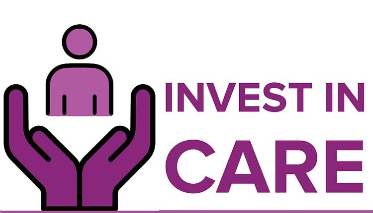
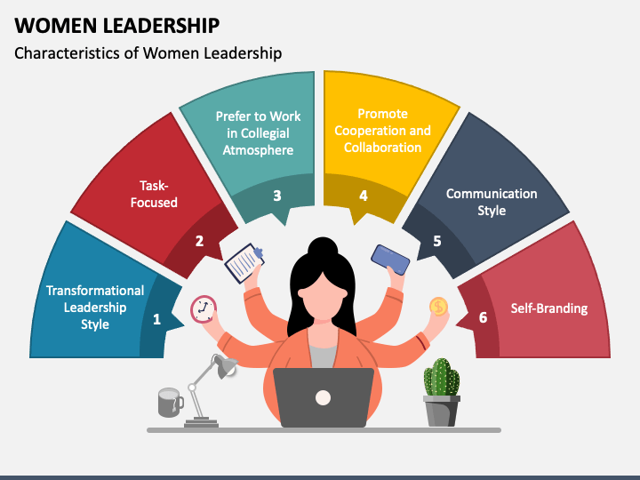

Gender inequality and the climate crisis are two of the most urgent challenges of today. As we better understand and make the critical connections between gender, social equity and climate change, it’s time we take action towards solutions.
Globally, women have fewer opportunities for economic participation than men, less access to basic and higher education, greater health and safety risks, and less political representation.
Guaranteeing the rights of women and giving them opportunities to reach their full potential is critical not only for attaining gender equality, but also for meeting a wide range of international development goals. Empowered women and girls contribute to the health and productivity of their families, communities, and countries, creating a ripple effect that benefits everyone.
The word gender describes the socially-constructed roles and responsibilities that societies consider appropriate for men and women. Gender equality means that men and women have equal power and equal opportunities for financial independence, education, and personal development. Women's empowerment is a critical aspect of achieving gender equality. It includes increasing a woman's sense of self-worth, her decision-making power, her access to opportunities and resources, her power and control over her own life inside and outside the home, and her ability to effect change. Yet gender issues are not focused on women alone, but on the relationship between men and women in society. The actions and attitudes of men and boys play an essential role in achieving gender equality.
Various Ways To Build Gender Equality-
1-Empower Women Smallholders
2-Invest In Care
3-Support Women's Leadership
4-Fund Women's Organization
5-Protect Women's Health
1-Empower Women Smallholders
Over the last few decades, 55 per cent of the improvement in food security in developing countries has been driven by programmes promoting women’s empowerment. The Food and Agriculture Organization projects that if women farmers had equal access to productive resources, their farm yields would increase by 20 to 30 per cent. This could provide enough food to keep 100 to 150 million people from going hungry, reducing global hunger by 12 to 17 per cent.
Increasing the productive capacity of women smallholders (small-scale farmers who manage agricultural areas up to 10 hectares, or roughly 25 acres) also helps to promote sustainable agricultural practices. 75 per cent of the world’s food comes from only 12 plants and 5 animal species, making the global food system extremely vulnerable to environmental shocks –– such as changing climate patterns and extreme weather events. Smallholders, who tend to rely on more diverse and climate-resilient crops, represent a sustainable alternative to our current model of agricultural production.
2-Invest In Care
The global economy depends on the unpaid and underpaid care work primarily carried out by women. But despite its essential nature –– which we’ve seen more than ever during the COVID-19 pandemic –– this work is not valued in accordance with its worth. Rather, care work (much like the environment) is treated like a limitless commodity that can be used without cost or consequence.
Instead, governments should treat care work like a collective good, expanding its availability and providing adequate support to those who do it. This includes investing in the expansion of care services, as well as increasing support for unpaid caregivers There’s a role for the private sector as well, in supporting unpaid care work through paid family leave and flexible working arrangements. Investing in care work is not only an acknowledgement of its importance but is also a way to create jobs and foster economic growth without increasing carbon emissions. Care is an inherently sustainable economic sector: rather than consuming resources, it helps to sustain and strengthen human abilities. Curbing emissions will require us to rethink the way we produce and measure value –– moving from a depletion-based economic model to one based on regeneration –– and investing in care is a crucial step in this direction.

3-Support Women's Leadership
At both the national and the community level, women’s representation and leadership appear to drive better environmental outcomes. Countries with higher percentages of women in parliament tend to adopt stricter climate change policies, resulting in lower emissions. At the local level, women’s participation in managing natural resources leads to more equitable and inclusive resource governance and better conservation outcomes. And when community climate programmes fully include women, they tend to be more effective and efficient in their use of resources.
In general, women are more likely to consider their families and communities in decision-making processes –– which is crucial to producing the kind of holistic solutions that make for effective climate action. Indigenous women in particular possess unique knowledge about agriculture, conservation and natural resource management that make their voices indispensable in any decision-making processes.

4-Fund Women's Organization
Strong civil society organizations are a critical counterbalance to powerful state and corporate actors. They bring the voices of those who best understand their own experiences and needs into decision-making processes and help to keep governments accountable to the people they are meant to serve –– both key to climate action that prioritizes the wellbeing of people and planet.
Government collaboration with women’s organizations can help ensure that climate policies meet the specific needs of women and girls, and that such policies are effectively implemented. In vulnerable communities, women’s organizations often act as an informal safety net, bridging gaps in government services and helping to provide emergency support. Empowering such community networks is a crucial way to build climate resilience at the local level.
5-Protect Women's Health
Evidence suggests that women will bear the brunt of climate-linked negative health outcomes. In general, women are more likely to die in disasters, due in part to their limited access to resources and services. Research also indicates that climate change will have negative sexual and reproductive health impacts: higher temperatures are increasing the spread of diseases like malaria, dengue fever and Zika virus, which are linked to negative pregnancy and birth outcomes, and extreme heat itself appears to increase the incidence of stillbirth. As with other crises and disasters, climate change also increases vulnerability to gender-based violence.
At the same time, climate disasters often pull resources away from women’s health services and services to support survivors of gender-based violence. As climate change worsens, it is critical that these services are strengthened and expanded to help keep women healthy and safe.